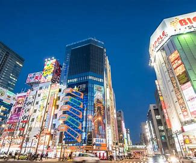

Tokyo
Tokyo is a bustling metropolis blending traditional temples with cutting-edge technology and vibrant pop culture.
Top Attractions
- Sensō-ji Temple
- Shibuya Crossing
- Akihabara District
Reasons to Visit
- Discover unique Japanese traditions and modern innovations
- Enjoy authentic sushi and ramen
- Explore anime and gaming culture
Gallery
